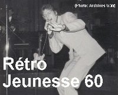

Gene Williams
Gene Williams, est né en Nouvelle Écosse au Canada, le 24 juillet 1948. Sa famille s'installe à Montréal en 1951 et Gene grandit au 1219 rue De Bullion à Montréal et atteint l'école primeur moitié anglais, (école St. Patrick's) et moitié français (école Saint Laurent). Sa mère Huguette Boivin, de Trois Rivières, s'occupe de cette maison de chambre et son père Slim (Lloyd) Williams, d'Halifax, chanteur country qui chante dans tous les clubs de la Maine; Rodéo, Rialto, Maine café etc.
Gene en mangeant beaucoup de hot-dogs devient un pool shark au Montréal Pool Room. Pendant plusieurs années la famille vit dans une chambre et partage la cuisine et la toilette avec les chambreurs.

Il a fait ses débuts en novembre 1963, avec son groupe Gene and the G-Notes. Il a travaillé dans les salles de danse "La Salle", "Golden", Parc Belmont etc. Gene a enregistré avec son groupe en une semaine l'album "I want to hold your hand" des Beatles que Ben Hallickman et son beau fils Art Young avaient fait venir d'Angleterre avant que le disque des Beatles soit disponible en Amérique.
La copie de Gene and The G-Notes est sortie en même temps que le disque des Beatles. Les vitrines de Kresgee et Woolworth étaient tapissées de pochettes de Gene et des Beatles. La version de Gene a vendu plus de 150,000 (cent cinquante milles) exemplaires. Une réalité peu connue. Gene n'a reçu aucune royauté.
Avant d'enregistrer en 1967 la chanson "Nicole" (composition Gene Williams, paroles françaises Lucien Brien, produit par Donald Lautrec sur disques Jupiter) Gene était guitariste attitré pour Donald Lautrec de 1965 à 1968.
Gene était également musicien de studio avec Pierre Nolès et Jerry Devilliers (arrangeurs et producteurs de l'époque) pendant les années 65 à 70 et on peut entendre sa guitare sur probablement 5 à 10% des enregistrements faits au Québec durant cette période magique de l'industrie du disque québécois.
En 1969 Chantal Renault enregistre une adaptation de sa composition "Plattsburgh Drive-In Blues".
Dans les années 70 Gene a travaillé avec André Lejeune comme guitariste à l'émission télévisé "A la Canadienne". En 1975, il a fait une adaptation de la chanson "Mon Pays" de Gilles Vigneault "From New York To L.A." (Patsy Gallant) qui a vendu plusieurs millions d'exemplaires à travers le monde.
En 1976 cette chanson est en nomination pour un "Juno" mais Gordon Lightfoot l'emporte et Patsy est l'artiste de l'année.
Dans les années 80, Gene avec son studio Startrack écrit et produit plusieurs hits incluant Alexandre "Laisse-moi" plus tard les Crooners et Beau Flash "Le rock dans la peu" plus de 50,000 disques vendus mais avec beaucoup de complications.
En 1991, Gene avec son épouse Eileen, achètent une fermette, il y installe son studio au sous sol, Gene devient un fermier.